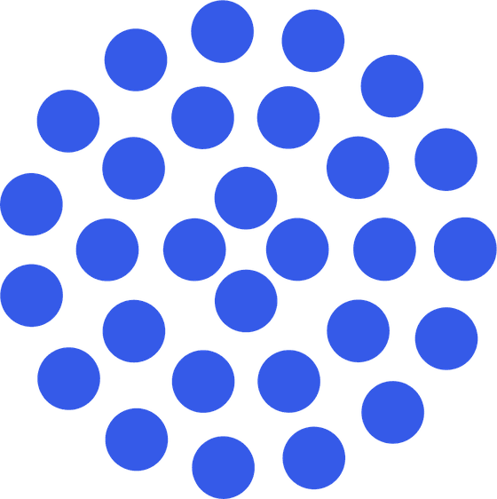
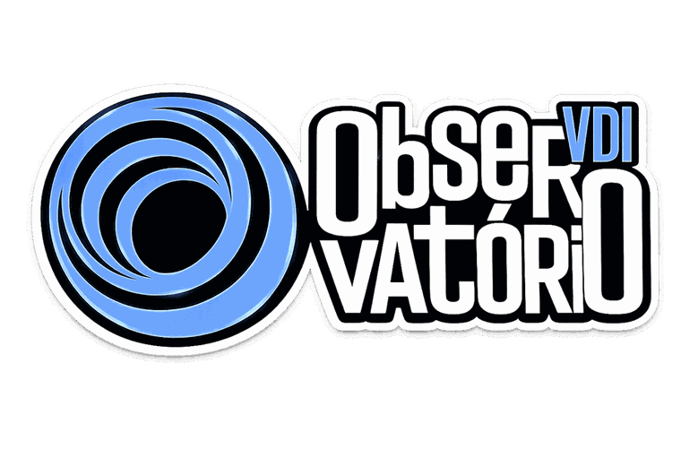
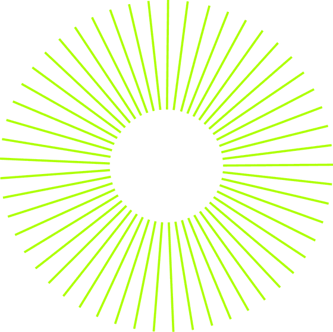
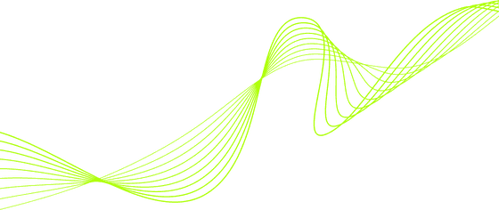
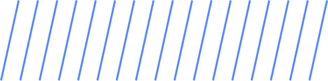
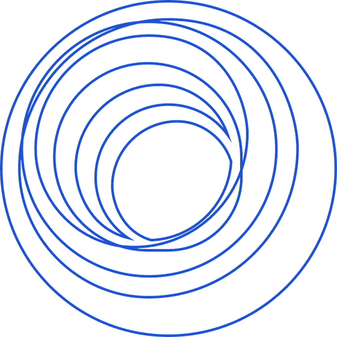

Troca estimativa por dado declarado.
Lavras decide sobre incentivo fiscal, programa e projeto o tempo todo. Até aqui, decidia por impressão.

Censo Semestral · Vale dos Ipês
Nove dimensões, a cada seis meses, declaradas pelas startups do Vale dos Ipês. É desse retrato que saem as decisões da cidade sobre inovação — e ele começa vazio.
50 a 60 min · dá para responder por partes

01 — 09
Cada eixo do radar é um bloco do censo. Juntar isto antes evita parar no meio para procurar número.
CNPJ, endereço, vertical, tecnologias e fase do negócio
Quem conduz, contato e área de atuação de cada um
As habilidades-chave que já existem e as que ainda faltam
Tamanho, nicho, concorrentes, vantagem competitiva e fornecedores
Quem é o cliente, o que dói nele e o que a startup resolve
Como faz dinheiro, qual a receita e por que isso escala
Clientes, funil, faturamento bruto anual e crescimento
Caixa, captação, investidores mapeados e empregos em Lavras
Incentivo fiscal, Sandbox e os 12 projetos prioritários
Por que existe

Troca estimativa por dado declarado.
Lavras decide sobre incentivo fiscal, programa e projeto o tempo todo. Até aqui, decidia por impressão.
Mede o peso real da tecnologia no PIB.
Quanto a tecnologia e o agrofoodtech movimentam de fato na economia do município — em número, não em discurso.

Mostra movimento, não só posição.
Porque se repete a cada seis meses, revela para onde o ecossistema está indo, e não apenas onde ele está.
O que você ganha

O que acontece com os seus números
Ficam sob sigilo. O que o Município publica sai sempre agregado e anonimizado.
O retrato é do ecossistema, nunca de uma empresa. Dados pessoais — contatos e endereços residenciais — não vão para documento de acesso público.
Lei Federal nº 13.709/2018 (LGPD)
Orientação Administrativa Municipal nº 001/2026/CTTC

O radar só sai do zero com o que as startups daqui responderem.
Responder o censo